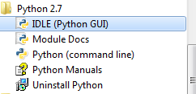
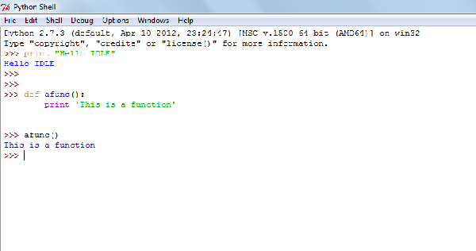
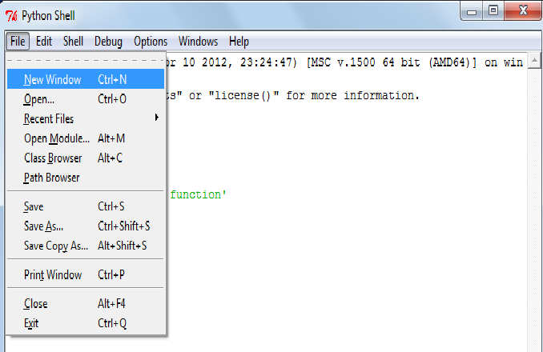
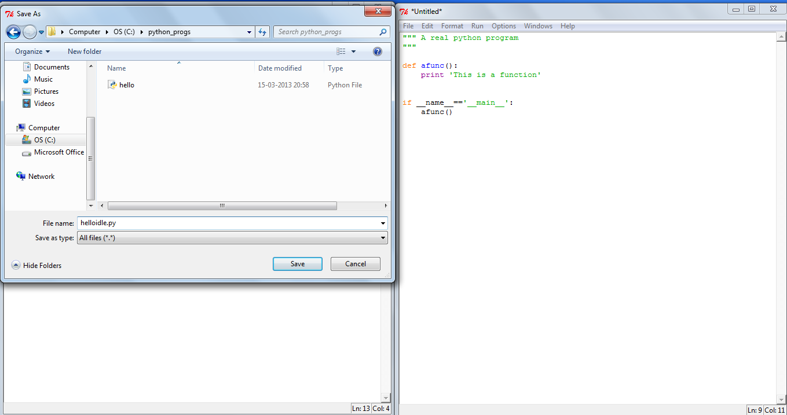
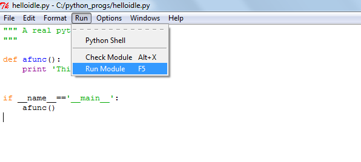
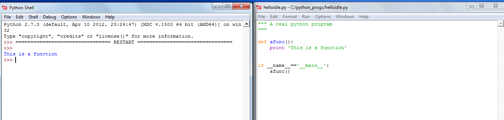
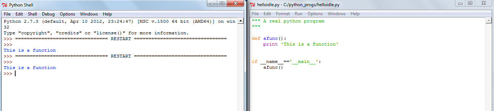
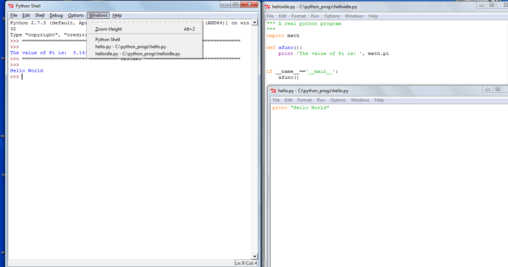
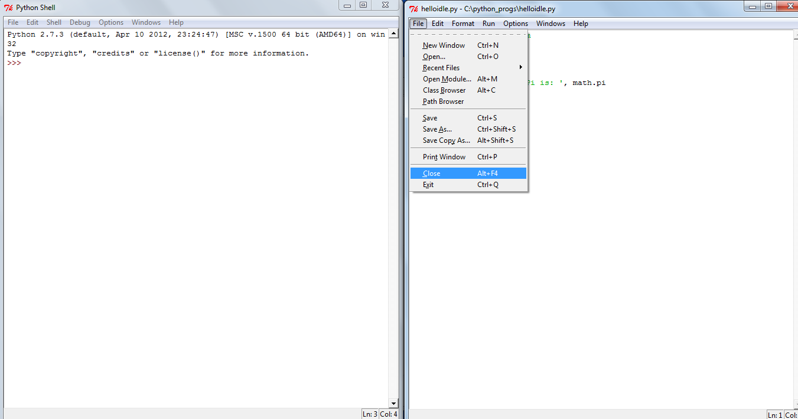

Using IDLE for Python Programming
Installation
On Windows, if you have installed Python using the installer, IDLE should already be installed. Go to your start menu and look for IDLE (Python GUI) under the Python27 or Python33 menu.
On Linux, you will most likely have to install it separately using the package manager. On Ubuntu, you can use the software center to search for IDLE and install it (either for Python 2 or Python 3). You can also install IDLE using the command line - the package name is most likely python-tools (for Python 3, it will most likely be python3-tools) both on Ubuntu and Fedora.
Getting Started
Once the installation is completed, start IDLE (on Windows, click the IDLE program from the menu; on Linux, type idle (or, idle3) on the terminal). You should see the Python interactive shell where you can enter Python statements:
You can go back to previous commands using the UP arrow key and press the ENTER key to bring the command to the current prompt. You can then modify it or execute it without any changes.
As you can see, the interactive shell automatically performs syntax highlighting on your commands.
Using the Editor
To open the editor, click on File -> New Window menu item.
Type in your program, and save it by using the File -> Save As menu item.
You can type your program here, and then click on Run -> Run Module menu item to execute it.
You will see that the result of execution of your program appears in the previous shell window from where you started the editor.
There is a message RESTART in the shell window whenever you run your module. This basically tells us that your module always starts from a new environment when it starts execution.
You can open more than one editor window open at the same time.
You can close the editor window only (File -> Close) or exit IDLE completely (File -> Exit).
Configuration
There are various aspects of IDLE you can configure by opening the Configure IDLE window (Options -> Configure IDLE).
For example, you can choose to start IDLE with the interactive shell window or the editor window by changing the preferences in the General tab.
Getting Help
You can open the Python documentation by clicking on the Help -> Python Docs menu item. On Windows, if you have installed the Python documentation during install, you will see them. On Linux, you will see that the Python documentation website is opened in your browser.
Conclusion
In this article, we have seen the most basic features that IDLE has. IDLE is friendlier to work with than the default interactive shell and its editor also makes it possible to write large programs without the need to use/install another program.